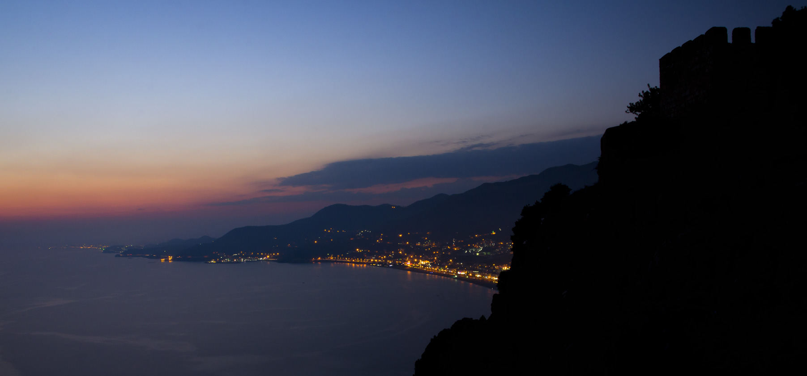
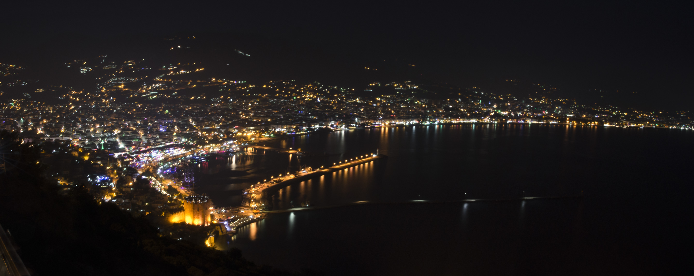
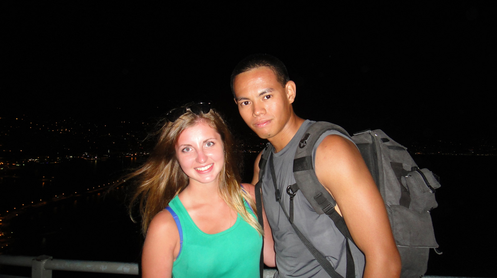
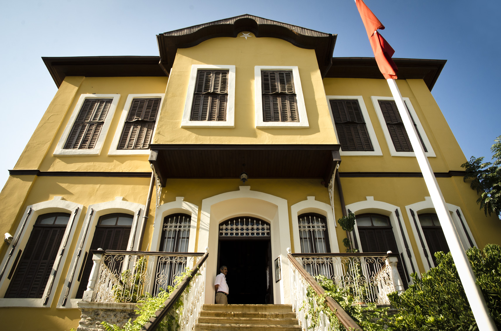
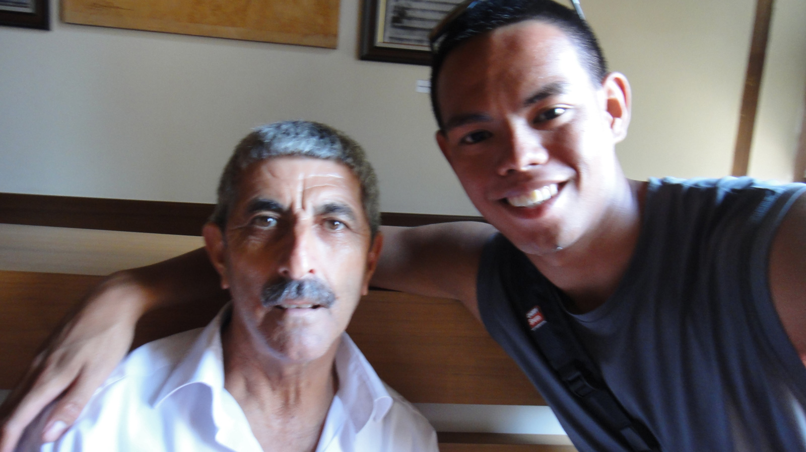

“Planning is cool but don't forget to leave some room for new opportunities & experiences. Just get out there & get in the moment.”
After a year and a half of stressful work, I decided to take 6 days off work. Since it was summer and I still work in Turkey, why not see the party city of Turkey, Alanya. All I wanted to do is relax, drink, and take photos. Little did I know there is something more valuable than pampering myself.
I did a bit of research on how to get to the place. There is a shuttle service that I found online paid for pick up. When I arrived Antalya airport, I waited a few minutes for my shuttle. One of the local bus drivers said, “Ride? City Center”. I replied, “I want to go to Alanya”. He carefully explained, “I drop you off the middle of highway, cross other side, wait for the Alanya bus to come”.
I stood silent for a bit and thought about it. First of all, I have an English-speaking shuttle, which is about to come. Second, I don't trust strangers that much. Third, I understood what he said but it was hard to picture so it is a bit confusing to me. Last, I have 6 vacation days so if I got lost on the first day then I have 5 more days to find my way home. The risk is high and the cons are not brutally bad. I decided to ride in the bus and played with uncertainty.
While my mind was wandering, the bus driver told me to get off the bus and cross the bridge to catch the Alanya bus. Oh boy, I am really in the middle of the highway and I don't have any instincts at the moment. I saw an overpass, crossed it and waited patiently. After a few hours the bus to Alanya came.
I arrived to Alanya and started to look for the hostel. On the way to the hostel, there is this guy yelled from his vehicle “America! Wooo!”. I smiled back and made me think because there is no indication that I am American. I am Asian with a blue backpack. Maybe it is the way I walk.
I finally found the hostel and the receptionist gave me a map of Alanya. A map at last! There is no way I am going to get lost.
First in the agenda, go up the mountain and take a panoramic photo of the area at sunset. I hiked up and it was no joke, pretty damn far. I found my spot and took photos. It was really dark when I finished.
There are no shuttles going down the mountain at that time which left me no choice but to walk. While I was heading down, I found a Russian mother and daughter fellow tourists. I told them while passing by, “Amazing view that way” pointing to the direction where I came from. They pointed to the direction where I came from and said, “Go down”. “Nope, that is the way up. This is the way down”, I replied. They pointed again on the same direction, “Down”. “This is the way to go down. You can come with me. Your call”, I offered. They both hesitated. I can see and understand that it would be crucial for them to trust anyone at this moment. You are a tourist and lost in a pretty dark mountain, of course everything can easily go wrong. Honestly, I would not trust anyone and find the way myself. Just me.
They agreed and started to walk with me down the mountain. We exchange names (which now I forgot, I am terrible with names anyway) and salutations. The daughter kept telling me that her mother is very nervous. I reassured them that they are safe with me and I know the way down. On the way down, we took several stops for photos and they wanted me to get in the photo.
I tried to have a photo with the two of them but the mother rather takes her daughter's picture and me. Oh well, we can have all good souvenirs.
As we press on our walk down the road, there is wreckless driver that passed us by. The music is loud and I saw a bunch of guys in it. They suddenly stopped for a few seconds. Then they hit the road again. All I can think of that moment is “Thank God, I'm with them. What could have happened if they were alone?”. They must have only saw the ladies before they decided to stop because I was walking in front. After a few miles, we made it to the market place and club area. The tourists are familiar with this place. They thanked me and we parted ways.
After a few days of walking around, going to clubs and having several drinks I decided to find Ataturk's House. The place is inside somewhere in the city but I am really optimistic that I can easily find it. I was lost, tired, and hungry. I wondered if I could really find this place. Nearest food I can get my hands on at the moment is Baklava. Its a desert but the sugar and calories will keep me going, oh joy. I asked the shop owner about Ataturk's House and pointed at the map (a vector illustrated kiddie map). It is either he had no clue what I am trying to say or he doesn't know where the place is.
Luckily there were kids playing nearby and the younger generation where taught English. These four 2-5 year old kids decided to take me on walk to the place. It is funny how there are no guardians around for these kids. We went on a mini adventure passing through backyards (it felt like trespassing). Ataturk's House was like 5 blocks away from where I was and I don't think I am going to find this place without these little adventurers. (Yes, I should have took a photo of them)
I went inside and met the housekeeper. He asked me if I am Filipino. I am surprised because only a few Turkish people know what a Filipino is. I mean this is not a territory that my people would live. “Yes”, I replied. He told me to look around first then we will talk after my tour.
I went back to him and he excitedly picked up the phone. He talked to someone and gave me the phone. It was his Filipina daughter-in-law. We talked a bit and shared experiences. She originally lives in Holland, married a Turkish man, and visiting Alanya for a while. I wasn't able to see her face to face because her husband is not around, we are just giving proper customs to the culture. I thought about how much connection you feel when you talk to a stranger who shares the same culture in such a distant place. The housekeeper was also excited to build that connection as well.
There was other little delights in my journey alone in Alanya but these experiences that I shared caught me off guard and became memorable. If I stuck with my original plan, I am more likely missing these spontaneous opportunities. You find a lot of valuable things or experiences in detours than the destination itself.